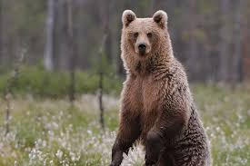

Los osos o úrsidos (Ursidae) son una familia de mamíferos omnívoros. Son animales de gran tamaño, generalmente omnívoros, ya que, a pesar de su temible dentadura, comen frutos, raíces e insectos, además de carne. Con sus pesados cuerpos y sus poderosas mandíbulas, los osos se encuentran entre los mayores carnívoros que viven en la Tierra. Mientras que el oso polar es mayoritariamente carnívoro, debido a la escasez de otras fuentes de alimento, y se alimenta casi únicamente de carne (focas), el panda gigante se alimenta casi por completo de bambú. Las seis especies restantes son omnívoras con dietas variadas. Con la excepción de cortejar a individuos y madres con sus crías, los osos suelen ser animales solitarios. Pueden ser diurnos o nocturnos y tienen un excelente olfato. A pesar de su complexión pesada y su forma de andar torpe, son corredores, escaladores y nadadores expertos. Los osos utilizan refugios, como cuevas y troncos, como guaridas; la mayoría de las especies ocupan sus guaridas en invierno durante un largo período de hibernación, de hasta cien días.
Aunque solo existen ocho especies de osos, están muy extendidas y aparecen en una amplia variedad de hábitats en todo el hemisferio norte y parcialmente en el hemisferio sur. Los osos se encuentran en los continentes de América del Norte, América del Sur, Europa y Asia. Las características comunes de los osos modernos incluyen cuerpos grandes con patas robustas, hocicos largos, orejas pequeñas y redondeadas, pelo desgreñado, patas con cinco garras no retráctiles y colas cortas. Aunque los osos son considerados plantígrados, sólo las patas posteriores son plantígradas; las anteriores son digitígradas. Un macho de oso polar pesa en promedio 500 kg y alcanza una talla de hasta 130 cm a la altura de la cruz.Se mueven con un caminar pesado, apoyando toda la planta de los pies (son, por lo tanto, animales plantígrados).Los osos han sido cazados desde tiempos prehistóricos por su carne y su piel; se han utilizado para ser hostigados y otras formas de entretenimiento, como hacerles bailar. Con su poderosa presencia física, juegan un papel destacado en las artes, la mitología y otros aspectos culturales de varias sociedades humanas. En los tiempos modernos, los osos se han visto presionados por la invasión de sus hábitats y el comercio ilegal de partes de osos, incluido el mercado asiático de osos biliares. La UICN enumera seis especies de osos como vulnerables o en peligro de extinción, e incluso las especies menos preocupantes, como el oso pardo, están en riesgo de extinción en ciertos países. La caza furtiva y el comercio internacional de estas poblaciones más amenazadas están prohibidos, pero aún persisten.
